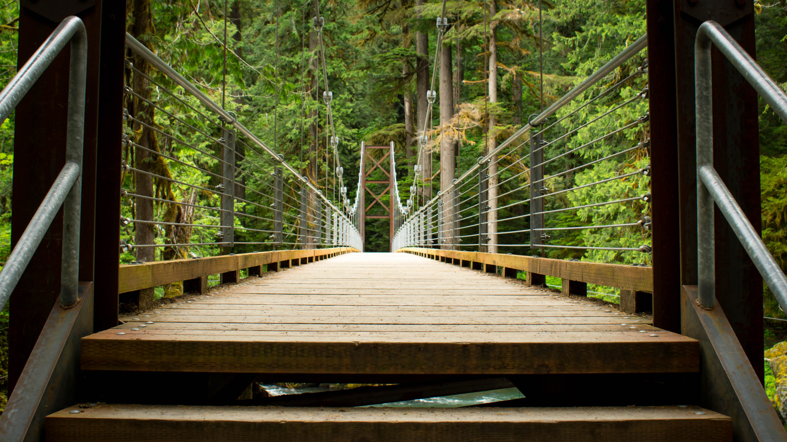

Redwoods and Northern California
This trip was an excuse to watch a disc golf tournament and play a legendary course. Along the way I played 24 different courses, did some hiking, and made a tentative friendship with a herd of elk.

Olympic National Park
I wasn't sure what to expect with Olympic National Park. Well, that's not completely true. I do my research. But it seemed like such an obscure notion to combine rainforest, jagged crumbling mountains, and rugged remote coastline all in one park.
Central Cascades
I didn't know about the quality of adventuring to be had in the Central and North Cascades until last summer. Somehow I managed to remain unaware of the extraordinary sights and views for years.